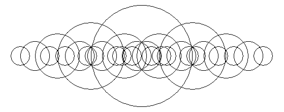
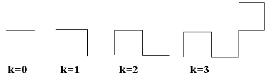
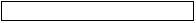
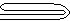
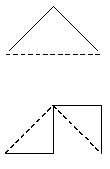
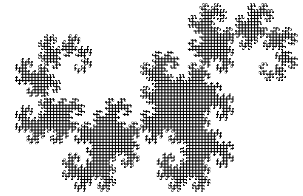

Понятие рекурсии и простейшие рекурсивные алгоритмы. Примеры задач. Рекурсивные алгоритмы и их построение
Простейшая рекурсия (замена цикла)
Факториал. Рекурсивный и итеративный способы вычисления.
Рекурсивный способ:
function fact(n : integer) : longint;
begin
if n <= 1 then
fact := 1
else
fact := n * fact(n - 1);
end;
long fact(int N) {
if(N < 0) // если пользователь ввел отрицательное число
return 0; // возвращаем ноль
if (N == 0) // если пользователь ввел ноль,
return 1; // возвращаем факториал от нуля - не удивляетесь, но это 1 =)
else // Во всех остальных случаях
return N * fact(N - 1); // делаем рекурсию.
}
int factorial(int n) {
return !n ? 1 : n * factorial(n - 1);
}
Реализация на Python
# Факториал, рекурсивный способ: O(n) по времени, O(n) памяти на стек вызовов
def factorial(n):
"""Возвращает n! для целого n >= 0."""
if n < 0:
raise ValueError("факториал определён только для n >= 0")
if n <= 1:
return 1
return n * factorial(n - 1) # n! = n * (n-1)!
def main():
for n in range(6):
print(f"{n}! = {factorial(n)}")
print(f"20! = {factorial(20)}")
if __name__ == "__main__":
main()
Реализация на Rust
// Факториал, рекурсивный способ: O(n) по времени, O(n) памяти на стек вызовов
// При n > 20 результат не помещается в u64
pub fn factorial(n: u64) -> u64 {
if n <= 1 {
return 1;
}
n * factorial(n - 1) // n! = n * (n-1)!
}
fn main() {
for n in 0..6 {
println!("{n}! = {}", factorial(n));
}
println!("20! = {}", factorial(20));
}Рекурсивные функции
Рекурсивная функция (лат. recursio — возвращение) — функция, которая в своей записи содержит вызов себя же.
Рекуррентные отношения
Рекуррентным соотношением называют формулу, которая выражает очередной член последовательности через предыдущие члены. Чтобы последовательность определялась однозначно, формулу дополняют начальными членами. Например, факториал задаётся условиями $0! = 1$ и $n! = n \cdot (n - 1)!$ при $n \ge 1$, откуда $5! = 5 \cdot 4! = 5 \cdot 24 = 120$.
Числа Фибоначчи задаются условиями $F_0 = 0$, $F_1 = 1$ и соотношением $F_n = F_{n-1} + F_{n-2}$ при $n \ge 2$. Получаем $F_2 = 1$, $F_3 = 2$, $F_4 = 3$, …, $F_{10} = 55$, …, $F_{20} = 6765$.
Задача о Ханойских башнях тоже приводит к рекуррентному соотношению. Пусть $T_n$ - число перемещений дисков при переносе $n$ дисков описанным ниже способом: сначала $n - 1$ верхних дисков переносим на вспомогательный стержень, затем нижний диск - на целевой стержень, и наконец $n - 1$ дисков переносим с вспомогательного стержня на целевой. Поэтому $T_n = 2T_{n-1} + 1$ при $T_0 = 0$. Отсюда $T_1 = 1$, $T_2 = 3$, $T_3 = 7$, а в общем виде $T_n = 2^n - 1$, что проверяется по индукции: $2(2^{n-1} - 1) + 1 = 2^n - 1$.
Вычислять члены по рекуррентной формуле можно двумя способами. Рекурсивная функция, которая повторяет определение $F_n = F_{n-1} + F_{n-2}$, делает очень много вызовов: для $F_{20}$ их $2F_{21} - 1 = 21891$. Поэтому члены обычно вычисляют в цикле, запоминая два последних значения: для $F_n$ достаточно $n$ шагов. Программа печатает $F_0, \dots, F_{10}$ и $F_{20}$.
Реализация на Python
# Числа Фибоначчи по рекуррентной формуле F(n) = F(n-1) + F(n-2) в цикле: n сложений, O(1) памяти
def fibonacci(n):
"""Возвращает F(n) для n >= 0: F(0) = 0, F(1) = 1, F(n) = F(n-1) + F(n-2)."""
if n < 0:
raise ValueError("номер члена должен быть неотрицательным")
previous, current = 0, 1 # F(0) и F(1)
for _ in range(n):
previous, current = current, previous + current # переход от пары F(k), F(k+1) к паре F(k+1), F(k+2)
return previous
def main():
print([fibonacci(n) for n in range(11)])
print(fibonacci(20))
if __name__ == "__main__":
main()
Реализация на C++
// Числа Фибоначчи по рекуррентной формуле в цикле: n сложений, O(1) памяти
#include <cstdint>
#include <iostream>
// Возвращает F(n) для n от 0 до 93 (F(93) - последнее число Фибоначчи, помещающееся в 64 бита)
std::uint64_t fibonacci(unsigned n) {
std::uint64_t previous = 0; // F(0)
std::uint64_t current = 1; // F(1)
for (unsigned i = 0; i < n; ++i) {
std::uint64_t next = previous + current; // F(i + 2)
previous = current;
current = next;
}
return previous;
}
int main() {
for (unsigned n = 0; n <= 10; ++n) {
std::cout << fibonacci(n) << ' ';
}
std::cout << '\n' << fibonacci(20) << '\n';
return 0;
}
Фракталы и фрактальные множества
Популярное определение фрактала опирается на самоподобие: фрактал - фигура, которая обладает этим свойством (см. статью на skillbox.ru). Самоподобное множество состоит из нескольких своих частей, каждая из которых является уменьшенной копией всего множества. Такие множества удобно строить рекуррентно: на каждом шаге каждую часть заменяют уменьшенными копиями целого по заданному правилу. Если множество состоит из $N$ копий, каждая из которых получена из всего множества подобием с коэффициентом $r$ ($0 < r < 1$), то величину $D = \frac{\log N}{\log (1/r)}$ называют размерностью подобия.
Канторово множество. Из отрезка $[0; 1]$ удаляем средний интервал $\left(\frac{1}{3}; \frac{2}{3}\right)$, затем из каждого из двух оставшихся отрезков удаляем его среднюю треть и так далее. На уровне $n$ получаем $2^n$ отрезков длины $3^{-n}$, их суммарная длина равна $\left(\frac{2}{3}\right)^n$. Например, на уровне $3$ получаем $8$ отрезков длины $\frac{1}{27}$, суммарная длина которых равна $\frac{8}{27} \approx 0.296$. Множество состоит из двух копий самого себя с коэффициентом $\frac{1}{3}$.
Треугольник Серпинского. Из закрашенного треугольника удаляем средний треугольник, вершинами которого служат середины сторон исходного. Остаются три треугольника, каждый из которых подобен исходному с коэффициентом $\frac{1}{2}$. На уровне $n$ получаем $3^n$ треугольников со стороной $2^{-n}$ (сторона исходного треугольника равна $1$), а закрашенная площадь составляет $\left(\frac{3}{4}\right)^n$ от исходной. Например, на уровне $3$ получаем $27$ треугольников, а доля закрашенной площади равна $\frac{27}{64} \approx 0.422$.
Кривая Коха. Средняя треть отрезка заменяется двумя сторонами равностороннего треугольника, построенного на ней как на основании. На уровне $n$ получаем $4^n$ отрезков длины $3^{-n}$ и ломаную длины $L_n = \left(\frac{4}{3}\right)^n$ (для исходного отрезка длины $1$). Длины связаны рекуррентным соотношением $L_n = \frac{4}{3} L_{n-1}$, $L_0 = 1$; например, $L_3 = \frac{64}{27} \approx 2.370$. Кривая состоит из четырёх копий самой себя с коэффициентом $\frac{1}{3}$.
Для канторова множества, треугольника Серпинского и кривой Коха размерность подобия равна соответственно $\frac{\log 2}{\log 3} \approx 0.631$, $\frac{\log 3}{\log 2} \approx 1.585$ и $\frac{\log 4}{\log 3} \approx 1.262$. Драконова ломаная, которая строится рекурсивно, описана ниже, в разделе «Фракталы».
Программа строит уровни канторова множества и печатает номер уровня, число отрезков и их суммарную длину:
Реализация на Python
# Канторово множество уровня n: 2^n отрезков длины 3^-n, концы отрезков - точные дроби (Fraction)
from fractions import Fraction
def cantor_segments(level):
"""Отрезки (левый и правый конец) уровня level: из каждого отрезка удаляется его средняя треть."""
segments = [(Fraction(0), Fraction(1))]
for _ in range(level):
next_segments = []
for left, right in segments:
third = (right - left) / 3
next_segments.append((left, left + third)) # левая треть остаётся
next_segments.append((right - third, right)) # правая треть остаётся, средняя удалена
segments = next_segments
return segments
def main():
for level in range(4):
segments = cantor_segments(level)
total_length = sum(right - left for left, right in segments)
print(level, len(segments), total_length)
if __name__ == "__main__":
main()
Примеры рекурсивных функций
Помните детское стихотворение-считалку про 10 негритят? Оно может служить эпиграфом к любой работе на тему "Рекурсия".
«10 негритят пошли купаться в море, 10 негритят резвились на просторе, Один из них пропал – и вот вам результат: 9 негритят пошли купаться в море, 9 негритят резвились на просторе, Один из них пропал – и вот вам результат: … … … … … 1 (из) негритят пошли(ел) купаться в море, 1 (из) негритят резвились(ся) на просторе, Один из них пропал – и вот вам результат: Нет больше негритят!»
Первые три строчки этого стихотворения повторяются 10 раз с небольшим изменением - число негритят уменьшается с каждым разом на единицу. И только, когда число негритят уменьшилось до нуля, стихотворение заканчивается единственной строчкой «Нет больше негритят!». Напишем процедуру, печатающую это стихотворение.
procedure Negr(k: integer); {k - число негритят, параметр процедуры}
begin
if k=0 then {проверка, что число негритят равно нулю}
Writeln('Нет больше негритят!') {выход из рекурсии }
else begin
Writeln(k,' негритят пошли купаться в море,');
Writeln(k,' негритят резвились на просторе,');
Writeln('Один из них пропал - и вот вам результат:');
Negr(k-1); {Вызов процедуры с уменьшенным на 1 параметром}
end
end;
Вызов этой процедуры в основной программе будет выглядеть так: Negr(10).
Реализация на Python
# Рекурсивный обратный отсчёт (стихотворение про негритят): O(n) по времени, O(n) памяти на стек вызовов
def negr(k, lines):
"""Добавляет в список lines строки стихотворения для k негритят (при k <= 0 - финальная строка)."""
if k <= 0:
lines.append("Нет больше негритят!")
return
lines.append(f"{k} негритят пошли купаться в море,")
lines.append(f"{k} негритят резвились на просторе,")
lines.append("Один из них пропал - и вот вам результат:")
negr(k - 1, lines) # вызов с уменьшенным на 1 числом негритят
def main():
lines = []
negr(2, lines)
print("\n".join(lines))
if __name__ == "__main__":
main()
Реализация на Rust
// Рекурсивный обратный отсчёт (стихотворение про негритят): O(n) по времени, O(n) памяти на стек вызовов
pub fn negr(k: u32, lines: &mut Vec<String>) {
if k == 0 {
lines.push("Нет больше негритят!".to_string());
return;
}
lines.push(format!("{k} негритят пошли купаться в море,"));
lines.push(format!("{k} негритят резвились на просторе,"));
lines.push("Один из них пропал - и вот вам результат:".to_string());
negr(k - 1, lines); // вызов с уменьшенным на 1 числом негритят
}
fn main() {
let mut lines = Vec::new();
negr(2, &mut lines);
for line in &lines {
println!("{line}");
}
}
Реализация на C++
// Рекурсивный обратный отсчёт (стихотворение про негритят): O(n) по времени, O(n) памяти на стек вызовов
#include <iostream>
#include <string>
#include <vector>
// Добавляет в lines строки стихотворения для k негритят (при k <= 0 - финальная строка)
void negr(int k, std::vector<std::string>& lines) {
if (k <= 0) {
lines.push_back("Нет больше негритят!");
return;
}
lines.push_back(std::to_string(k) + " негритят пошли купаться в море,");
lines.push_back(std::to_string(k) + " негритят резвились на просторе,");
lines.push_back("Один из них пропал - и вот вам результат:");
negr(k - 1, lines); // вызов с уменьшенным на 1 числом негритят
}
int main() {
std::vector<std::string> lines;
negr(2, lines);
for (const std::string& line : lines) {
std::cout << line << '\n';
}
return 0;
}
Интересным является применение рекурсии при создании рисунков.
Пример 1.
Рассмотрим простейший рисунок из окружностей разных радиусов.

Если вглядеться в него внимательно, то можно заметить, что рисунок начинается с центральной окружности самого большого радиуса. Затем осуществляется переход на концы горизонтального диаметра окружности, которые должны играть роль центров двух окружностей меньшего радиуса (примерно в полтора раза). Этот же процесс повторяется и с этими двумя окружностями, и с полученными четырьмя новыми, и так далее до тех пор, пока уменьшающийся радиус окружности не станет меньше первоначального в 1,5*1,5*1,5*1,5 раз (если посчитать, то должно выполниться четыре вложенных вызова рекурсивной процедуры).
Рекурсивная процедура, выполняющая такой рисунок, должна иметь в качестве передаваемых параметров координаты центра окружности и величину радиуса.
Программа, при помощи которой будет нарисован этот рисунок, может быть написана так:
uses Graph;
procedure Ris(x,y,r:integer);
begin
If r>=10 then begin
Circle(x,y,r); { Рисуем окружность }
{ Вызываем 2 раза рекурсивно саму себя }
Ris(x-r,y,r*2 div 3);
Ris(x+r,y,r*2 div 3)
end
end;
var GD,GM : integer;
begin
GD := detect;
GM := 1;
InitGraph(GD,GM,'');
Ris(320,240,100); { Рисуем по центру экрана, самая большая окружность - 100 пикселей }
Readln;
CloseGraph;
end.
Реализация на Delphi с сохранением в файл.
unit MainUnit;
interface
uses
Winapi.Windows, Winapi.Messages, System.SysUtils, System.Variants,
System.Classes, Vcl.Graphics, Vcl.Controls, Vcl.Forms, Vcl.Dialogs,
Vcl.ExtCtrls, PngImage;
type
TDrawForm = class(TForm)
Image: TImage;
procedure FormCreate(Sender: TObject);
private
procedure SaveToPNG(FileName: string);
procedure Circle(x, y, r: integer);
procedure Ris(x, y, r: integer);
public
end;
var
DrawForm: TDrawForm;
implementation
{$R *.dfm}
procedure TDrawForm.FormCreate(Sender: TObject);
begin
{ Не закрашивать фигуру }
Image.Canvas.Brush.Style := bsClear;
{ Подстройка ширины и высоты картинки }
Image.Width := 559;
Image.Height := 220;
Image.Picture.Bitmap.Width := Image.Width;
Image.Picture.Bitmap.Height := Image.Height;
{ Вызов рекурсивной процедуры }
Ris(Image.Width div 2, Image.Height div 2, 100);
{ Сохранение в формате .png }
SaveToPNG('ris.png');
end;
{ Сохранение в формате .png: FileName - имя файла }
procedure TDrawForm.SaveToPNG(FileName: string);
var
png: TPngImage;
begin
png := TPngImage.Create;
png.Assign(Image.Picture.Bitmap);
png.SaveToFile(FileName);
png.Free;
end;
{ Окружность с центром: x, y - центр окружности, r - радиус }
procedure TDrawForm.Circle(x, y, r: integer);
begin
Image.Canvas.Ellipse(x - r, y - r, x + r, y + r);
end;
{ Рекурсивная процедура }
procedure TDrawForm.Ris(x, y, r: integer);
begin
if r >= 15 then
begin
Circle(x, y, r);
Ris(x - r, y, r * 2 div 3);
Ris(x + r, y, r * 2 div 3)
end;
end;
end.
Пример 2.
На входном потоке находится слово (последовательность литер), заканчивающаяся пробелом. Написать программу, которая позволит напечатать это слово "задом наперед", т.е. выписывая буквы слова с конца.
В этом примере мы опишем процедуру, у которой не будет параметров, т.к. при каждом ее вызове будет вводиться одна литера, которая будет сравниваться с пробелом. Сама же программа будет состоять только из вызова этой процедуры.
Procedure REV;
var c:char;
begin
read(c);
if c<>' ' then begin
REV; write(c)
end
end;
BEGIN
REV
END.
Реализация на Python
# Разворот слова рекурсией: O(n) по времени, O(n) памяти на стек вызовов
def reverse_word(word):
"""Возвращает слово, записанное с конца."""
if len(word) <= 1: # пустое слово и одна буква развернуты уже сами по себе
return word
# Первую букву ставим в конец, а остаток слова разворачиваем рекурсивно
return reverse_word(word[1:]) + word[0]
def main():
for word in ["рекурсия", "паровоз", "а", ""]:
print(f"{word} -> {reverse_word(word)}")
if __name__ == "__main__":
main()
Реализация на Rust
// Разворот слова рекурсией: O(n) по времени, O(n) памяти на стек вызовов
pub fn reverse_word(word: &str) -> String {
let chars: Vec<char> = word.chars().collect();
reverse_chars(&chars)
}
// Первая буква уходит в конец, остаток слова разворачивается рекурсивно
fn reverse_chars(chars: &[char]) -> String {
match chars.split_first() {
None => String::new(),
Some((first, rest)) => reverse_chars(rest) + &first.to_string(),
}
}
fn main() {
for word in ["рекурсия", "паровоз", "а", ""] {
println!("{word} -> {}", reverse_word(word));
}
}Фракталы
Фракталами называются множества, части которых являются повторением образов самих множеств. Изображения фракталов вызывают обычно у всех большой интерес.
Рассмотрим процесс сгибания бумажной полоски: если взять полоску бумаги, согнуть ее пополам К раз и развернуть полоску так, чтобы углы на сгибах стали равны 90°, то, посмотрев на торец полоски, можно увидеть ломаную, которая называется "драконовой ломаной К-го порядка", где K-количество сгибов. Схема этого процесса изображена ниже.




Опишем способ создания «драконовой» ломаной.
На ломаной нулевого порядка, как на гипотенузе, строим прямой угол, на полученных сторонах прямого угла строим тоже прямые углы, но один развернут в правую сторону, а другой - в левую. Данный процесс повторяется К раз.
Напишем соответствующую программу, которая по заданному числу К рисует драконову ломаную К-го порядка.
Program DRACON;
Uses Graph;
Var Gd,Gm,k:Integer;
Procedure st (x1, y1, x2, y2, k:Integer);
Var xn,yn:Integer;
Begin
If k > 0
then begin
xn:=(x1+x2)div 2 + (y2-y1)div 2;
yn:=(y1+y2)div 2 - (x2-x1)div2;
st(x1,y1,xn,yn,k-1);
st(x2,y2,xn,yn,k-1);
end
else Line(x1,y1,x2,y2);
End;
Begin
Gd:=Detect; Gm:=1;
InitGraph(Gd,Gm,'D:\BP\BGI');
WriteLn ('Введите номер уровня ');
Readln( k);
st(200, 300, 500, 300, k);
Readln;
CloseGraph;
End.
Если с помощью этой программы построить ломаную дракона 14-го порядка, то мы получим образ множества, называемого фракталом Хартера-Хейтуэя, рисунок которого приведен ниже.

Реализация на Python
# Драконова ломаная рекурсией: 2^depth отрезков, O(2^depth) по времени и памяти
def dragon(start, end, depth):
"""Возвращает отрезки драконовой ломаной глубины depth между точками start и end.
Координаты должны делиться на 2^depth, иначе деление на 2 даст дробную часть.
"""
if depth == 0:
return [(start, end)]
(x1, y1), (x2, y2) = start, end
# Новая вершина: середина отрезка, сдвинутая перпендикулярно на половину его длины
middle = ((x1 + x2) // 2 + (y2 - y1) // 2, (y1 + y2) // 2 - (x2 - x1) // 2)
return dragon(start, middle, depth - 1) + dragon(end, middle, depth - 1)
def main():
# Отрезок от (0, 0) до (8, 0) делим три раза: получаем 8 отрезков
segments = dragon((0, 0), (8, 0), 3)
print(f"{len(segments)} отрезков")
for start, end in segments:
print(start, "->", end)
if __name__ == "__main__":
main()
Реализация на Rust
// Драконова ломаная рекурсией: 2^depth отрезков, O(2^depth) по времени и памяти
pub type Point = (i64, i64);
pub fn dragon(start: Point, end: Point, depth: u32) -> Vec<(Point, Point)> {
if depth == 0 {
return vec![(start, end)];
}
// Новая вершина: середина отрезка, сдвинутая перпендикулярно на половину его длины
let middle = (
(start.0 + end.0) / 2 + (end.1 - start.1) / 2,
(start.1 + end.1) / 2 - (end.0 - start.0) / 2,
);
let mut segments = dragon(start, middle, depth - 1);
segments.extend(dragon(end, middle, depth - 1));
segments
}
fn main() {
// Отрезок от (0, 0) до (8, 0) делим три раза: получаем 8 отрезков
let segments = dragon((0, 0), (8, 0), 3);
println!("{} отрезков", segments.len());
for (start, end) in segments {
println!("{:?} -> {:?}", start, end);
}
}Литература
Павлова М.В., Паньгина Н.Н. Примеры и задачи на тему «Рекурсия». – «Компьютерные инструменты в образовании», 2001